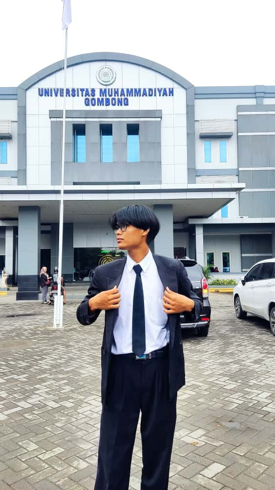

<!doctype html>
<html lang="id">
<head>
  <meta charset="utf-8" />
  <meta name="viewport" content="width=device-width,initial-scale=1" />
  <title>Profil Martin Wijaya — Mahasiswa SI LPKIA</title>
  <meta name="description" content="Martin Wijaya-Information System Student." />
  <style>
    @import url('https://fonts.googleapis.com/css2?family=Poppins:wght@400;500;600;700&display=swap');
    *{box-sizing:border-box;margin:0;padding:0}
    html,body{height:100%}
    body{
      font-family:'Poppins',sans-serif;
      background:linear-gradient(135deg,#a8edea,#fed6e3);
      color:#0f172a;
      display:flex;
      align-items:center;
      justify-content:center;
      padding:24px;
      animation:fadeIn 1s ease-in;
    }

    .card{
      width:100%;
      max-width:950px;
      background:#fff;
      border-radius:20px;
      box-shadow:0 10px 35px rgba(0,0,0,0.2);
      overflow:hidden;
      display:grid;
      grid-template-columns:280px 1fr;
      transform:scale(0.98);
      transition:transform 0.4s ease, box-shadow 0.4s ease;
    }
    .card:hover{
      transform:scale(1);
      box-shadow:0 14px 40px rgba(0,0,0,0.25);
    }

    .sidebar{
      background:linear-gradient(180deg,#2563eb,#60a5fa);
      color:#fff;
      padding:32px 22px;
      display:flex;
      flex-direction:column;
      align-items:center;
      text-align:center;
      gap:18px;
    }

    .avatar{
      width:150px;height:150px;
      border-radius:50%;
      overflow:hidden;
      border:4px solid #fff;
      box-shadow:0 6px 16px rgba(0,0,0,0.3);
      animation:float 3s ease-in-out infinite;
    }
    .avatar img{width:100%;height:100%;object-fit:cover}

    h1{font-size:1.45rem;margin-top:8px;font-weight:700}
    .role{font-size:1rem;color:#dbeafe}
    .contact{font-size:0.9rem;color:#f0f9ff;opacity:0.95}
    .footer{font-size:0.8rem;color:#e0e7ff;margin-top:10px;text-align:center}

    .content{
      background:#f9fafb;
      padding:34px 36px;
      overflow-y:auto;
    }

    .section{margin-bottom:24px;animation:slideUp 0.8s ease}
    .section h2{
      font-size:1.05rem;
      color:#1d4ed8;
      margin-bottom:12px;
      border-bottom:3px solid #93c5fd;
      display:inline-block;
      padding-bottom:4px;
      font-weight:600;
    }

    .info-list{
      display:grid;
      grid-template-columns:repeat(2,minmax(0,1fr));
      gap:14px;
    }
    .info-item{
      background:#fff;
      border-left:5px solid #3b82f6;
      padding:14px;
      border-radius:10px;
      box-shadow:0 3px 6px rgba(0,0,0,0.06);
      transition:transform 0.2s;
    }
    .info-item:hover{transform:translateY(-2px)}
    .label{font-size:0.78rem;color:#64748b}
    .value{font-weight:600;margin-top:6px;color:#0f172a}

    .skills,.hobbies{display:flex;flex-wrap:wrap;gap:10px}
    .tag{
      background:linear-gradient(90deg,#3b82f6,#60a5fa);
      color:white;
      padding:7px 14px;
      border-radius:999px;
      font-size:0.85rem;
      font-weight:500;
      box-shadow:0 3px 8px rgba(0,0,0,0.15);
      transition:transform 0.25s,box-shadow 0.25s;
    }
    .tag:hover{transform:translateY(-3px);box-shadow:0 6px 12px rgba(0,0,0,0.2)}

    .edu{display:flex;flex-direction:column;gap:14px}
    .item{
      background:#fff;
      border-radius:10px;
      padding:14px;
      border:1px solid #dbeafe;
      box-shadow:0 3px 6px rgba(0,0,0,0.05);
    }
    .item .meta{font-size:0.9rem;color:#1d4ed8;font-weight:600}
    .item .desc{font-size:0.9rem;color:#0f172a;margin-top:6px;line-height:1.4}

    p{color:#1e293b;font-size:0.95rem;text-align:justify}

    @keyframes fadeIn{from{opacity:0;transform:translateY(20px)}to{opacity:1;transform:translateY(0)}}
    @keyframes slideUp{from{opacity:0;transform:translateY(10px)}to{opacity:1;transform:translateY(0)}}
    @keyframes float{0%,100%{transform:translateY(0)}50%{transform:translateY(-6px)}}

    @media(max-width:768px){
      .card{grid-template-columns:1fr}
      .sidebar{flex-direction:row;justify-content:flex-start;text-align:left;padding:20px}
      .avatar{width:90px;height:90px}
      .content{padding:22px}
      .info-list{grid-template-columns:1fr}
    }
  </style>
</head>
<body>
  <article class="card" aria-label="Profil Data Diri Martin Wijaya">
    <aside class="sidebar">
      <div class="avatar"></div>
      <div>
        <h1>Martin Wijaya</h1>
        <div class="role">Mahasiswa Sistem Informasi — LPKIA</div>
      </div>
      <div class="contact">
    <div class="contact">
    <div>
        ✉️ <a href="mailto:martinwijaya731@gmail.com">martinwijaya731@gmail.com</a>
    </div>
    <div>
        📞 <a href="https://wa.me/6288238173177">+62 882-3817-3177</a>
    </div>
    <div>
        📷 <a href="https://instagram.com/mrtnmwyj" target="_blank">IG mrtnmwyj</a>
    </div>
</div>
      <div class="footer">Update terakhir: <time datetime="2025-11-17">17 Nov 2025</time></div>
    </aside>

    <section class="content">
      <div class="section">
        <h2>Informasi Singkat</h2>
        <div class="info-list">
          <div class="info-item">
            <div class="label">Tempat, Tanggal Lahir</div>
            <div class="value">Kebumen, 3 Januari 2006</div>
          </div>
          <div class="info-item">
            <div class="label">Alamat</div>
            <div class="value">Jl. Cihanjuang No.129, Cibabat, Kec. Cimahi Utara, Kota Cimahi, Jawa Barat 40513</div>
          </div>
          <div class="info-item">
            <div class="label">Pendidikan</div>
            <div class="value">S1 Sistem Informasi — LPKIA</div>
          </div>
          <div class="info-item">
            <div class="label">Status</div>
            <div class="value">Mahasiswa</div>
          </div>
        </div>
      </div>

      <div class="section">
        <h2>Keahlian</h2>
        <div class="skills">
          <span class="tag">Analisis Masalah</span>
          <span class="tag">Python</span>
          <span class="tag">MS Office (MOS)</span>
          <span class="tag">UI/UX</span>
          <span class="tag">Html Dasar</span>
        </div>
      </div>

      <div class="section">
        <h2>Hobi</h2>
        <div class="hobbies">
          <span class="tag">Renang</span>
          <span class="tag">Bersepeda</span>
           <span class="tag">Membaca</span>
        </div>
      </div>

      <div class="section">
        <h2>Pendidikan & Pengalaman</h2>
        <div class="edu">
          <div class="item">
            <div class="meta">SDN Madurejo (Lulus)</div>
            <div class="meta">SMPN 1 Kuwarasan (Lulus)</div>
            <div class="meta">SMAN 1 Gombong — MIPA (Lulus)</div>
             <div class="meta">IDE LPKIA — Sistem Informasi (Sekarang)</div>
            <div class="desc">Aktivitas: PMI, Kampung Inggris Kebumen.</div>
          </div>
          <div class="item">
            <div class="meta">Pengalaman Organisasi & Kegiatan</div>
            <div class="desc">
              - Anggota Himpunan Mahasiswa Sistem Informasi<br>
              - Panitia Makrab Prodi Sistem Informasi<br>
              - Panitia Kaderisasi<br>
              - Panitia SPLIT Prodi<br>
            </div>
          </div>
        </div>
      </div>

      <div class="section">
        <h2>Ringkasan Diri</h2>
        <p>Halo, aku Martin Wijaya.Aku adalah seseorang yang suka mengeksplor hal-hal baru dan menikmati proses belajar dari pengalaman sehari-hari. Aku tipe orang yang santai tapi tetap punya tujuan, suka bekerja dengan cara yang rapi, dan mudah beradaptasi dengan lingkungan maupun orang baru. Aku juga senang suasana yang nyaman dan produktif, serta selalu berusaha jadi versi terbaik dari diriku setiap harinya..</p>
      </div>
    </section>
  </article>
</body>
</html>


